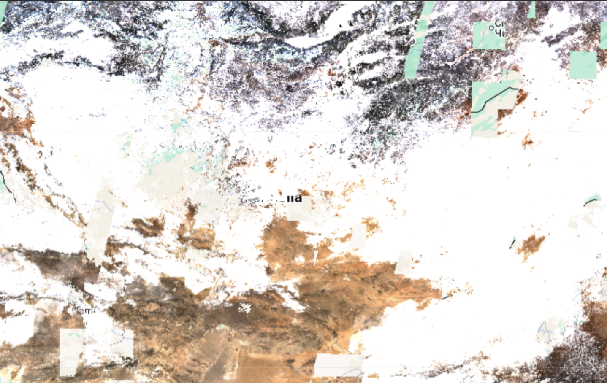
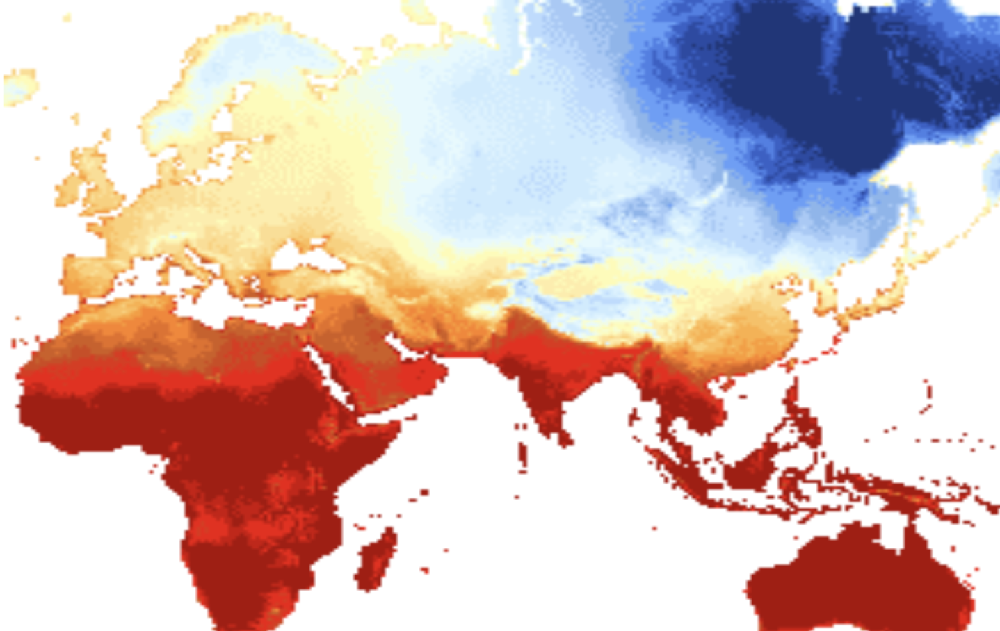

Methodology
Problem Formulation
As aforementioned above, we frame land degradation forecasting as a supervised binary classification problem. The goal is to predict the land cover state (Bare vs. Vegetated) of a location in year t+1, given only satellite imagery and climate data available up to year t. This ensures a strict forecasting regime with no temporal data leakage.
Comparative Modeling Approaches
We investigate two distinct paradigms for this task:
- Random Forest (Feature Engineering): We train a pixel-level classifier on a 58-dimensional vector of handcrafted features. This includes raw Sentinel-2 reflectances, derived spectral indices (NDVI, NDMI, NDBI) to capture vegetation and moisture, and multi-year precipitation statistics from TerraClimate.
- SatMAE (Representation Learning): We employ a Masked Autoencoder Vision Transformer (ViT) operating at the chip level. The model takes a sequence of temporal Sentinel-2 RGB composites (224x224 pixels) and a precipitation map as input, learning spatiotemporal representations directly from the raw data without manual index calculation.
Input Feature Visualization
The models fuse high-resolution optical data with coarse-resolution climate variables. Below are examples of the input features used for training:

Sentinel-2 Input Data

TerraClimate Precipitation

Spectral Band Feature (Sentinel-2)

Precipitation Feature Grid